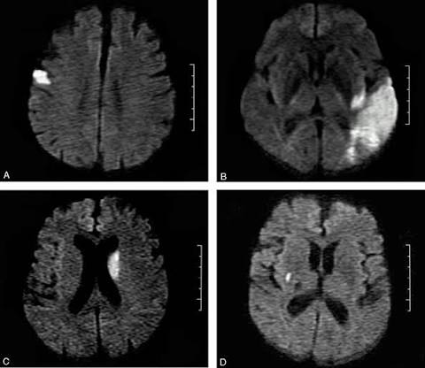
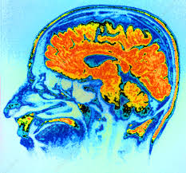
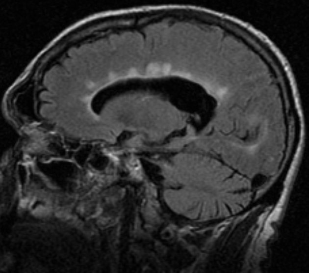
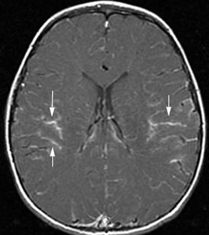
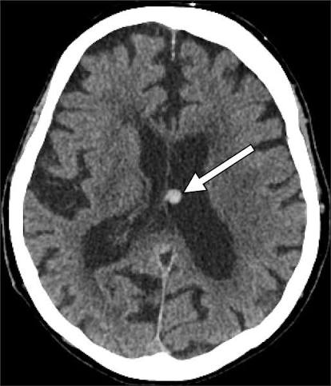

Судинні захворювання нервової системи
Патології, спричинені гострими або хронічними порушеннями мозкового кровообігу.
Приклади нозологій:
- Ішемічний інсульт
- Геморагічний інсульт
- Транзиторна ішемічна атака

Патології, спричинені гострими або хронічними порушеннями мозкового кровообігу.
Приклади нозологій:

Прогресуючі захворювання, що супроводжуються загибеллю нервових клітин.
Приклади нозологій:

Стани, за яких руйнується мієлінова оболонка нервових волокон центральної нервової системи.
Приклади нозологій:

Група захворювань, що характеризуються раптовими нападними станами різного походження.
Приклади нозологій:

Ураження головного та спинного мозку, спричинені бактеріями, вірусами чи іншими агентами.
Приклади нозологій:

Механічні пошкодження черепа, головного мозку та їхніх оболонок різного ступеня тяжкості.
Приклади нозологій: